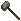
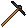
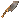
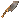
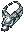

装備品の改良
Publish74より、Runic toolを使った装備品の改良が導入されました。
これにより、ShameやWrongダンジョンに導入されたような新マジックアイテムを作成できるようになります。
１．必要な施設およびアイテム
アイテムの改良には、下記の施設およびアイテムが必要です。インゴットや木材のような素材は使用しませんが、
Imbuing[練成]スキルが65.0（改良全オプション使用時は115.0）以上必要です。
- soul forge[ソウルフォージ]

 runic tool[ルニックツール各種]
runic tool[ルニックツール各種]- 素材効果およびマジック効果が付加されていない装備品※1
- Stygian Abyssを適用していること
※1について
高品質武器の「武器ダメージ」、和鎧の一部に付加される「瞑想可」、高品質防具の属性抵抗値加算はマジック効果とみなされません。
プレイヤーの作成する鱗鎧は、素材効果も付加されますが、改良することができます。
Publish85より、細工スキルで作成する武器などで改良が可能となります。
鍛冶
 hatchet [手斧] 細工
hatchet [手斧] 細工 smith's hammer [鍛冶ハンマー] 細工
smith's hammer [鍛冶ハンマー] 細工-  sledge hammer [スレッジハンマー] 細工
-  pickaxe [ツルハシ] 細工
 pitchfork [くまで] 細工
pitchfork [くまで] 細工  butcher knife [肉切り包丁] 細工
 butcher knife [肉切り包丁] 細工
 cleaver [包丁, クリーバー] 細工
cleaver [包丁, クリーバー] 細工 skinning knife [皮はぎナイフ] 細工
skinning knife [皮はぎナイフ] 細工- gargish necklace [ガーゴイルネックレス] 細工
 gargish earring [ガーゴイルイヤリング] 細工
gargish earring [ガーゴイルイヤリング] 細工-  gargish amulet [ガーゴイルアミュレット] 鍛冶
 大工
大工
 nunchakut [ヌンチャク] 細工
nunchakut [ヌンチャク] 細工
 石工
石工
 gargish stone amulet [ガーゴイルストーンアミュレット] 石工
gargish stone amulet [ガーゴイルストーンアミュレット] 石工
２．工程
アイテム改良の一連の流れは下記のとおりです。
- ソウルフォージの近く（2マス以内）でRunic toolをダブルクリックし、改良したい装備品をターゲットに指定する。
ターゲットした装備品は、使用するRunic toolで作成できるものでなければならない。
なお、このとき生産メニューは表示されない。
- 生産オプション（下画像）が表示されるので、必要なオプションをチェックし、「改良する」のボタンを押す。
チェックしたオプションの種類に応じて、必要スキルおよびチャージ数が変化する。
- 使用したRunic toolおよび設定したオプションを反映した装備品に改良される。
同種のRunic toolを2つ以上所持している場合、1.で、同種のRunic toolをターゲットに指定すると、使用回数を合算することができます。
ただし、合算した結果が100回を超える場合、使用回数は合算されません。

３．オプションの説明
オプションは、プロパティの強度を上げたり付加するプロパティをある程度特定したいときに選択します。
オプション内のヘルプからも内容を確認することができます。
特性値重視および上限値増強は、TC1シャードでのテスト中にオプション選択から削除されています。
付加されるプロパティや強度の情報は、魔法効果・練成＞アイテム改良の効果にまとめています。
- パワフル製造 ： マイナス効果なしで、マジックプロパティの強度を高める。
- 補強不可化 ： パワフル製造よりも強度の上昇量は大きいが、補強不可（耐久値＝35）が付加される。
- 良耐久性化 ： "補強不可化"チェック時のみ選択可能。耐久値＋10の効果
- 修理不可化 ： 補強不可化よりも強度の上昇量は大きいが、修理不可（耐久値＝150）が付加される。
なお、補強不可化と修理不可化を両方適用したとき、耐久値は75となる。
- 高耐久性化 ： "修理不可化"チェック時のみ選択可能。耐久値＋50の効果
特性値重視 ： 付加されたプロパティの数または強度を失う代わりに、他のプロパティ強度を高める。上限値増強 ： "特性値重視"チェック時のみ選択可能。プロパティ強度の上限が高くなる。- 1ワード保証 ： 装備品に1つのプロパティワードおよび関連するプロパティが付加される。さらに、ランダムにプロパティが付加される。
- ワード種選択 ： "1ワード保証"チェック時のみ選択可能。
プロパティワードを選択できるようになり、それが確実に付加されるようになる。
ただし、使用するRunic toolによっては、選択できないワードもある。
- 両ワード保証(2ワード保証) ： "1ワード保証"チェック時のみ選択可能。装備品に2つのプロパティワードおよび関連するプロパティが付加される。
- 1ワード選択 ： "両ワード保証"チェック時のみ選択可能。
プロパティワードを選択できるようになり、それが確実に付加されるようになる。
オプションを1つ適用するごとに、改良に必要なチャージ数が1増加します。
全てのオプションをチェックすると、1回の改良で10チャージ消費します。
選択したプロパティワードが第1ワードか第2ワードになるかは決まっていません。

４．必要スキル
オプションを選択するためには、一定以上のImbuing[練成]スキルが必要です。
必要スキルの基本値は下記のとおりで、複数選択するときは、それらの最大値を適用します。
- パワフル製造 ： 66
- 補強不可化 ： 71
- 良耐久性化 ： 76
- 修理不可化 ： 81
- 高耐久性化 ： 86
- 1ワード保証 ： 91
- ワード種選択 ： 96
- 両ワード保証 ： 101
- 1ワード選択 ： 106
さらに、選択したオプションの数を必要スキルの基本値に加算します。
例）
- パワフル製造 ： 67(=66+1)
- パワフル製造、1ワード保証、ワード種選択 ： 99(=96+3)
- 全オプション選択 ： 115(=106+9)
５．その他の仕様
- 改良したアイテムを強化することは可能です。
- 改良したアイテムを練成することは可能です。
ただし、改良で付加されたプロパティの数および強度によっては、練成できない場合もあります。
- 大工で作成できるGnarled staff[自然木の杖]を、改良することはできません。
- 裁縫で作成できる帽子類は改良することができます。
- 改良により、SA(Stygian Abyss)以降に追加されたプロパティが付加された場合、装備するのにStygian Abyssが必要となります。